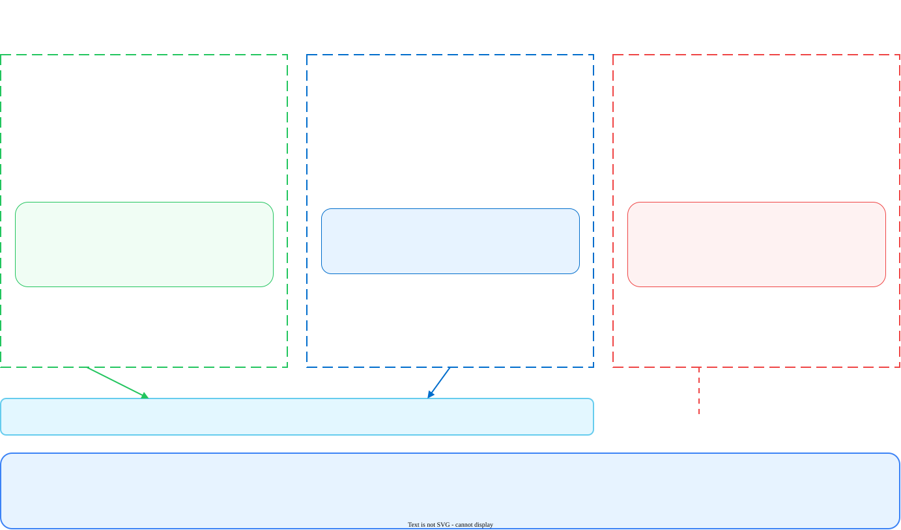

Client Applications
How to put each developer tool and each assistant through the AI Gateway
This document is for the customer. It covers the tools that people use, and not the applications that developers write. For an application that your team wrote, read the model provider prerequisites.
1. The three groups
Put each client into one of three groups. The group tells you what to change. It also tells you if you can change it.

| Group | What to change | Examples |
|---|---|---|
| 1. Open AI protocol | Base URL with /v1, the gateway key, and the full model reference |
Cursor, Open AI Codex CLI, the Open AI SDK, LiteLLM |
| 2. Anthropic protocol | Base URL with no /v1, the gateway key, a bare model name, and the provider header |
Claude Code, the Anthropic SDK |
| 3. No configurable endpoint | Nothing. You cannot route these. | The ChatGPT application, GitHub Copilot, Microsoft 365 Copilot |
2. Can I route this client?
| Client | Answer | Detail |
|---|---|---|
| Claude Code | Yes | Three environment variables. Group 2. |
| Cursor | Yes | An Open AI compatible base URL in the settings. Group 1. |
| Open AI Codex CLI | Yes | A custom model provider in a configuration file. Group 1. |
| The Open AI API | Yes | Any application that uses the Open AI SDK. Group 1. |
| The ChatGPT application | No | Open AI controls the endpoint. There is no setting to change. |
| GitHub Copilot | No | GitHub controls the endpoint. There is no setting to change. |
| Microsoft 365 Copilot | No | Microsoft controls the endpoint. There is no setting to change. |
| Microsoft Copilot Studio agents | Not confirmed | See the open question in section 8. |
| Power Platform | Not confirmed | See the open question in section 8. |
A customer frequently expects the gateway to give visibility of all AI use, and names ChatGPT and Copilot first. The gateway cannot see these products. This is a scope conversation, and not a configuration problem.
Say it at the first meeting. A customer who hears it at the end of the project believes that the product failed.
3. Claude Code
Claude Code is in group 2. It reads three environment variables.
export ANTHROPIC_BASE_URL="<gateway-base-url>"
export ANTHROPIC_AUTH_TOKEN="<gateway-api-key>"
export ANTHROPIC_CUSTOM_HEADERS="x-portkey-provider: @<integration-slug>"- Set the three variables in your shell.
- Add the same lines to your shell profile. The variables then survive a new terminal.
- Run
claude, then run/statusinside the session. - Confirm that the output shows your gateway address.
- Ask a small question, then open the gateway log in Strata Cloud Manager.
Claude Code adds its own path. If you add /v1, the request goes to a doubled path and the gateway answers 404.
The header is also necessary. Claude Code sends a bare model name. Without the header, the gateway answers 400 and tells you that it needs x-portkey-config or x-portkey-provider.
4. Cursor
Cursor is in group 1. Cursor accepts an Open AI compatible endpoint in its settings.
- Open the Cursor settings, then find the Models section.
- Turn on the custom Open AI API key option.
- Set the base URL to your gateway address, with
/v1at the end. - Set the API key to your gateway API key.
- Add a model with the full reference
@<slug>/<model-name>. - Use the Verify button in Cursor, then send one prompt.
- Open the gateway log in Strata Cloud Manager and confirm the request.
Cursor changes the names and the position of these settings between releases. The steps above give the shape of the task. Confirm each label in the version that your customer uses, and record it.
Cursor also keeps some features on its own servers. A custom endpoint changes the model calls. It does not move every Cursor feature.
5. Open AI Codex CLI
Codex is in group 1. It reads a configuration file at ~/.codex/config.toml.
model_provider = "aigw"
model = "@<integration-slug>/<model-name>"
[model_providers.aigw]
name = "Prisma AIRS AI Gateway"
base_url = "<gateway-base-url>/v1"
env_key = "AIGW_API_KEY"
wire_api = "responses"- Export the gateway key as
AIGW_API_KEY. - Add the lines above to the configuration file.
- Run
codexin a project, then ask a small question. - Confirm the request in the gateway log.
Codex needs an integration that serves the model that you name. The wire_api value must be responses, because that is the protocol that Codex supports for a custom provider.
6. ChatGPT, GitHub Copilot and Microsoft 365 Copilot
You cannot route these three products. Each one is a finished product. The vendor controls the model endpoint. There is no setting that changes it.
| Product | What you can do instead |
|---|---|
| The ChatGPT application | Block it at the network edge if policy does not permit it. Give your developers the Open AI API through the gateway as the approved path. |
| GitHub Copilot | Use the controls in GitHub itself. Give a gateway-routed assistant as the approved alternative. |
| Microsoft 365 Copilot | Use the Microsoft 365 administration controls. The gateway has no part in this path. |
People use the two names for the same thing. They are different. The API is a programmable endpoint, and the gateway can front it. The application is a product with a user interface, and the gateway cannot front it.
Ask the customer which one they mean. The answer changes the scope.
7. Microsoft Copilot Studio agents
A Copilot Studio agent is different from Microsoft 365 Copilot. You build the agent. You choose parts of its configuration.
The documentation that this site mirrors does not say that a Copilot Studio agent can send its model calls to a custom endpoint. Do not tell a customer that this works.
Two facts are confirmed, and they are different from each other. First, Prisma AIRS AI Red Teaming can test a Copilot Studio agent, through its own connection method. Second, that is a test path and not a traffic path. It does not put the gateway inline.
8. Open questions
What the customer asks. Can we send Copilot Studio agent traffic, or Power Platform traffic, through the gateway to get visibility?
What is confirmed. Nothing. The mirrored documentation does not describe a custom model endpoint for either product. AI Red Teaming has a Copilot Studio connection method, but that tests an agent and does not route its traffic.
What to do. Ask your product team. Then test it in a tenant before you answer. Record the date of the answer, because Microsoft changes these products frequently.
What it would change. If a Copilot Studio agent can call a custom endpoint, it joins group 1 and becomes a small configuration task. If it cannot, it joins group 3 and leaves the scope of the gateway.
This term appears in the request for this page. It does not appear in the Palo Alto Networks documentation that this site mirrors, and it does not appear anywhere else on this site.
Tell the author what it means, and this section becomes real content. This page does not guess.
9. Agents that are already running
A customer frequently has agents in production. These agents call models today. Two rules keep the work safe.
- Do not change a running agent first. Put the new agents through the gateway first. Move a running agent only after you have proved the path with something small.
- Route by the model call, and not by the agent. The slug in the model reference selects the integration. An agent that calls two different providers uses two different model references, through one gateway key.
You do not need one key for each provider. One key for each application is the correct unit, because the key is also how the gateway attributes the cost. The model reference, and not the key, selects the provider.
10. Checklist
- A list of every client application that your people use
- Each client put into group 1, group 2 or group 3
- The group 3 clients told to the customer, in writing
- A decision on what to do about each group 3 client
- The gateway base URL, and the correct use of
/v1for its group - A gateway API key for that client
- The model reference, or the bare model name and the header
- A person who can change the settings of that client
- A test prompt, and a person who can read the gateway log
- A product team answer on Copilot Studio and Power Platform
- A definition of KOI
- Confirmation of the Cursor setting labels in the customer version